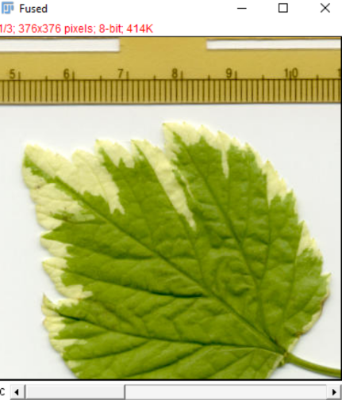

Basic Registration#
Stitching Images#
There are multiple ways to stitch images using the Grid/Collection Stitching plugin, including with metadata or file position.
Open the Grid/Collection Stitching plugin.
In this example, use Grid: snake by rows with the order of Right & Down.

In the dialogue box, specify the following parameters:
Grid size:
x = 3,y = 3Tile overlap [%]:
0
(This is a known value — the image we are stitching was part of a larger image. In an experimental context, this may be part of the image acquisition settings.)First file index:
1Directory: point to the
Leaf_stitchfolderFile name:
leaf-{i}.tif{i}specifies where in the filename to iterate through values.If this is written as
{ii}, there will be an error because the first file is1, not01.
Uncheck the Compute overlap box, since the overlap value is known.

Also try re-running the plugin with an overlap value of 10%.
Notice how there are errors near the borders of the leaf and on the ruler (especially the faded “9” value), but errors at the center of the leaf may be harder to spot.
This is why knowing the expected overlap value is important, as spotting errors in experimental data may be difficult.
In many cases, using stitching information from the image metadata is more helpful, because the position information comes from the microscope.